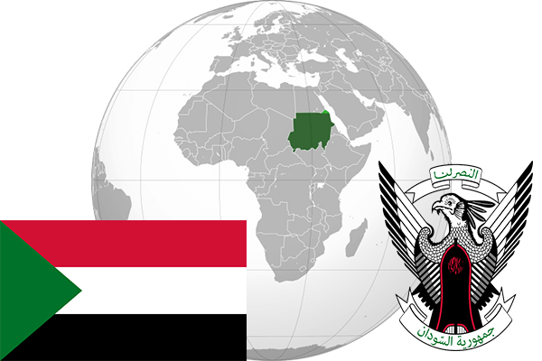

To`liq nomi: Sudan Respublikasi
Region: Shimoliy sharqiy Afrika
Qonunchilik shakli: Respublika
Mustaqillik kuni: 1 yanvar 1956-yil
Poytaxt: Xartum
Maydoni: 1,886,068 km²
Chegaradosh davlatlari: Misr, Liviya, Chad, MAR, Janubiy Sudan, Eriteriya, Efiopiya.
Aholisi: 39 578 828 (2016-yil)
Aholi zichligi: 21 /км²
Aholining o`rtacha yoshi: 63,75 yil
Rasmiy tili: Arab tili
Dini: Islom
Pul birligi: Sudan funti
Telefon prefiksi: +249
Internet domen: .sd
Xalqaro tashkilotlarga a`zoligi: BMT
Dengiz va okeanlarga chiqishi: Qizil dengiz
YIM: Butun: $91 mlrd(2016-yil) Jon boshiga: $2304
Yirik shaharlari: Xartum, Omdurman, Shimoliy Xartum